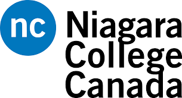

.jpg)
I'm Shivam Semwal, born in Uttarkashi, a place known as the ‘Land of Gods’ in Uttarakhand. My journey’s been far from a silver spoon story—it’s been a steady climb. When I was around five or six, my family moved to Surat, where I grew up and completed my schooling. I was fortunate to get a solid foundation in an English-medium school, and from there, my curiosity to learn more and build a meaningful future pushed me to go abroad.
In Canada, I started at Cambrian College, diving into General Business studies. After two years, I switched to Niagara College, exploring my interests through General Arts and Science. It was during this time that I had a realization: computers and programming were what truly fascinated me. I wanted to stay and delve deeper into tech, but due to some personal choices and financial challenges, I eventually returned to India.
Since then, I’ve poured my energy into web development, and here’s my first output after learning HTML! It’s a work in progress, but it’s a milestone I’m proud of and just the beginning of what I aim to create in this field.

Yep Thats Me
My educational journey began at Cambrian College, where I immersed myself in General Business studies for two transformative years. The program's hands-on approach equipped me with essential skills in finance, marketing, and management, all while balancing part-time work to support my studies. This experience instilled in me a strong sense of discipline and adaptability. After Cambrian, I took a step to explore my interests further at Niagara College in the one-year General Arts and Science program. This year allowed me to dive into a diverse array of subjects, leading me to discover my passion for technology and programming. The interactive learning environment and vibrant, multicultural community at Niagara helped shape my aspirations and set me on the path toward a career in web development.
You can check out my journey for college in the following links; click the picture or link!
In my downtime, I’m all about staying active and challenging my mind. Cricket has been a long-time passion of mine—there’s nothing like the thrill of a good match and the teamwork that drives it. I’m also a gamer, always ready to dive into new worlds and test my strategy skills. Chess is another favorite; the complexity and tactics make it a great mental workout. Beyond these, I’m always keen to learn new sports, eager to explore fresh challenges and keep things exciting.
I began my journey in Surat, where I received my education in an English medium school. Determined to improve my future, I moved to Canada for further studies. I enrolled at Cambrian College, pursuing General Business Studies while balancing work and study, which taught me resilience. After two years, I transferred to Niagara College for a year, where I explored my interests in General Arts and Science, ultimately discovering my passion for computers and programming.
Currently, I am learning web development, focusing on HTML, and I find excitement in creating and designing websites.
In addition to my studies, I have nurtured various hobbies. Cricket has been a significant passion of mine. I evolved from an average player into an all-rounder, winning the title of 'Man of the Match' in school competitions after years of dedication. Gaming has also been a lifelong favorite, starting with mobile games and evolving into PC gaming, where I eventually built my own gaming setup. Red Dead Redemption 2 remains my favorite story game, captivating me with its rich narrative and immersive world.
Chess has played a vital role in my life as well. I started playing when my brother bought a chess set and, over time, honed my skills to become a champion for three consecutive years in school and city competitions. However, due to the pressures of high school and foreign studies, I stepped back from the game, though I still play occasionally.
In summary, my journey has been one of growth and exploration, where each experience—whether in education, sports, or hobbies—has shaped who I am today. I look forward to continuing this path as I delve deeper into web development and further uncover my passions.